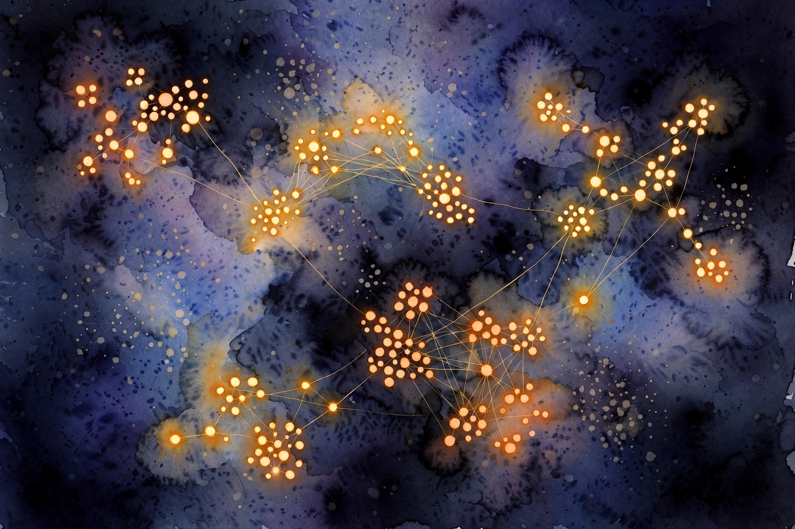
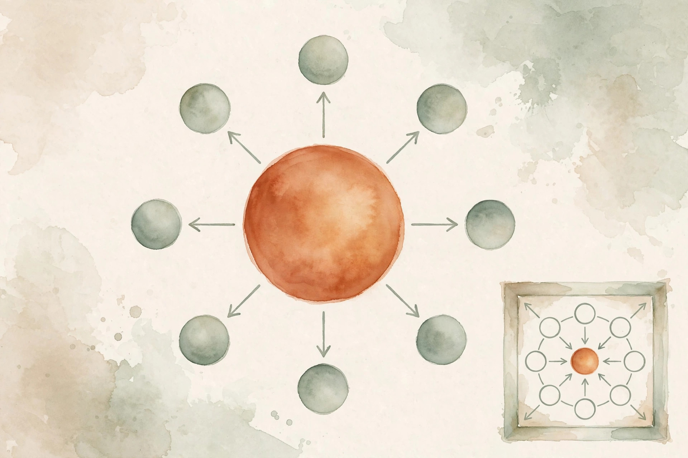
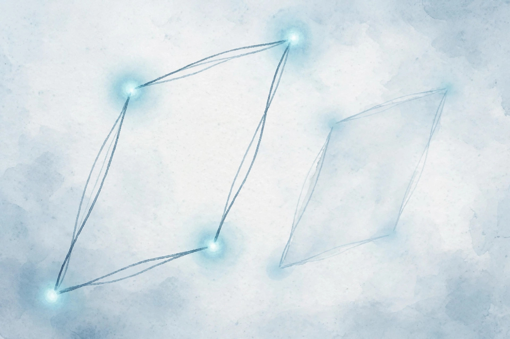

Companion 2 of 15 · narrated from the lesson document
Words become addresses in a space, and the space learns meaning from company. This companion walks the full arc of Unit 02: from one-hot name tags to skip-gram, negative sampling, GloVe, the PMI identity, analogies, and the honest limits of the plot.
From the lesson The idea, and every number beside it, comes from the cited section of lessons/u02_word_vectors.md. The phrasing is the companion’s.
Illustration Invented by the companion: an analogy, a toy with made-up values, or a what-if. Never lecture content.
companion Companion voice: the idea above the tag is from the lesson. The generalization below it is the companion’s.
Provenance: no full lecture transcript exists for this session. The 2026 lecture videos are restricted and unviewed, and the 2024 playlist was not viewed. This page narrates the lesson document, not a video. The session title (S02, Word Vectors) and the reading list (word2vec, negative sampling, GloVe paper titles) are OFFICIAL-SOURCE via SRC-02. The concept inventory is REQUESTED-BRANCH.

From the lessonC01 §2, §3
How do you give a word a numerical address? With a vocabulary of 14 words, one-hot “cat” is (0,1,0,...,0): a 14-dim vector with a single 1. Distributed “cat” is (0.21, −0.44, 0.09, 0.33, ...): an 8-dim vector of learned numbers. One-hot is a name tag: it says which word, and nothing else. Distributed is a profile: each dimension is a learned feature, and similarity between profiles means similarity between words. The name tag cannot express that “cat” is closer to “dog” than to “mat”. The profile can.
From the lessonC01 §5, §6
The lookup is a matrix product in disguise: the embedding matrix times a one-hot picks row w. The mechanism that matters: the embedding matrix is a parameter, not a fixed table. Gradients flow into it during training, so the vectors move to positions that help the objective. One-hot vectors never move. They have no parameters. From compute_u02.py: after 400 epochs of skip-gram training, the learned “cat” vector starts (0.21, −0.44, ...). Its cosine with “dog” is 0.816, with “mat” it is 0.679. The one-hot cosine between any two distinct words is 0.0. The learned vectors separate related from unrelated. The name tags cannot.
compute_u02.py (executed 2026-10-06): cos(cat, dog) = 0.816, cos(cat, mouse) = 0.808, cos(cat, mat) = 0.679, one-hot = 0.0. The learned vectors rank correctly.From the lessonC01 §11
The broken assumption is that distributed vectors capture all meaning. The counterexample is “cat” the animal versus “cat” the jazz musician. One vector per word form forces both senses into one address. The profile is a mixture, and the mixture can mislead. (C08 returns to this.)
From the lessonC02 §2, §3
Where do the vectors come from? Skip-gram takes center “cat” and predicts each context word (“the”, “sat”, “on”). CBOW takes the context words and predicts center “cat”. Same window, opposite arrows. Skip-gram treats each (center, context) pair as a training example, so rare words get many updates from their few occurrences. CBOW averages the context words into one prediction: faster and smoother, but the averaging washes out rare words.

From the lessonC02 §5
The softmax probability: P(o | c) = exp(u_o · v_c) / sum_w exp(u_w · v_c). Loss for one pair: −log P(o | c) = −u_o · v_c + log sum_w exp(u_w · v_c). The first term pulls u_o toward v_c, the second term pushes all u_w away from v_c. That push-pull is the whole mechanism. C03 and C04 are cheaper ways to compute the push.
From the lessonC02 §6
From compute_u02.py: 18 training tokens (stopwords removed), 66 (center, context) pairs, window 2. Mean negative-sampling loss falls from 0.6934 to 0.6471 over 400 epochs. The loss is per binary decision, not per word, so 0.69 is the chance-level start (log 2).
compute_u02.py (executed 2026-10-06): 0.6934 at epoch 0 (chance level, log 2) down to 0.6471 at epoch 400. The model learns, slowly, on a toy.From the lessonC02 §11
The broken assumption is that more pairs always help. Window 10 on the toy corpus covers whole sentences, so every word pairs with every other word, the “context” becomes the document, and all vectors collapse toward each other. Window width is a real hyperparameter, not a free lunch.
Illustration Softmax stability toy. The shift is the lesson’s remediation block. Try large values and watch the naive version fail.
z1
z2
z3
From the lessonC03 §2, §3
The softmax sums over all V words per pair. At V = 10,000, training crawls. What is the cheapest way to keep the push-pull? Instead of pushing all 13 wrong words away, push k = 2 sampled wrong words away. The sample stands in for the sum. Turn prediction into a game: for each true (center, context) pair, the model must say “real” while saying “fake” to k noise words. The noise words come from a fixed distribution (unigram to the 0.75 power).
From the lessonC03 §5
Gradient wrt v_c: −(1 − σ(u_o · v_c)) u_o + sum over noise of (1 − σ(−u_i · v_c)) u_i. The first term pulls v_c toward the true context vector with strength (1 − σ): large when the model is wrong, near zero when confident. Each noise term pushes v_c away from the noise vector. Same push-pull as C02, at O(k d) cost instead of O(V d).
From the lessonC03 §6
From compute_u02.py: one explicit step with v_c = (0.30, −0.20), u_o = (0.10, 0.40), learning rate 0.5. After the step v_c = (0.386, 0.043): the distance to u_o shrank, so the vector moved toward the positive context. Finite-difference check of the gradient: max error 2.76e-10, so the analytic gradient is correct.
compute_u02.py: v_c moves from (0.30, −0.20) to (0.386, 0.043), toward u_o = (0.10, 0.40). The arrow is one pull. Executed 2026-10-06.From the lessonC04 §2, §3
Can we keep a true probability distribution but avoid the O(V) sum? Put 8 words as leaves of a binary tree of depth 3. P(word | center) is the product of 3 binary decisions along the root-to-leaf path. Three sigmoids replace a 14-way softmax. Each internal node holds a vector. Going left or right at a node is a coin flip whose bias depends on the dot product of the node vector with the center vector. Frequent words get short paths (Huffman tree), so common predictions stay cheap.
From the lessonC04 §6
Toy numbers, hand-computed and labeled as such: depth 3, path turns (+1, −1, +1), dot products (0.5, −0.2, 0.8). σ(0.5) = 0.622, σ(0.2) = 0.550, σ(0.8) = 0.690. P = 0.622 × 0.550 × 0.690 = 0.236. Three sigmoids, one product.
From the lessonC04 §10, §11
Choose hierarchical softmax when you need proper probabilities and V is moderate. Choose negative sampling when V is huge and you only need good vectors, not probabilities. In practice negative sampling won for embeddings, and hierarchical softmax survives in some decoders. The broken assumption is that the tree shape does not matter: a degenerate chain tree costs O(V d) per pair, worse than the flat softmax, with vanishing gradients through L sigmoids.
Illustration Path-product toy. The tree walk is C04’s. The dot products are yours. Prefilled with the lesson’s illustrative numbers.
Dot 1
Dot 2
Dot 3
From the lessonC05 §2, §3
Word2vec scans the corpus with a sliding window. Can we use the count table directly? The cooccurrence matrix X holds X_cat,sat = 2: they cooccur twice in the window. GloVe fits vectors so that w_cat · w~_sat + b_cat + b~_sat approximates log X_cat,sat. GloVe is regression on log-counts. Rare pairs get downweighted because their counts are noisy, and zero pairs are skipped because log 0 is undefined.
From the lessonC05 §5
Why log? Ratios of cooccurrence probabilities carry meaning: P(solid|ice) / P(solid|steam) is large, P(gas|ice) / P(gas|steam) is small. The log turns ratios into differences: log X_ik − log X_jk = (w_i − w_j) · w~_k. Vector differences encode probability ratios. That is the whole point of the dot-product form.
From the lessonC05 §6
Toy, hand-computed and labeled as such: X_cat,sat = 2, log 2 = 0.693. With w_cat · w~_sat = 0.5, b_cat = 0.1, b~_sat = 0.05: residual = 0.5 + 0.1 + 0.05 − 0.693 = −0.043. Weight f(2) = (2/100)^0.75 = 0.053. Loss contribution = 0.053 × 0.043^2 = 9.8e-5. Small weight, small residual: the pair barely moves the vectors, as designed.
Illustration GloVe residual toy. The formula is C05’s. The counts are yours. Prefilled with the lesson’s illustrative numbers.
Cooccurrence count X
Dot product
Biases b + b~
From the lessonC06 §2, §3
Are learned vectors doing something principled, or just fitting? PMI measures surprise: PMI(w, c) = log(P(w, c) / (P(w) P(c))). Positive means the pair cooccurs more than chance, negative means less. The result: skip-gram with k negatives implicitly factorizes the matrix M_w,c = PMI(w, c) − log k. At the optimum, u_c · v_w = PMI(w, c) − log k. Word2vec is matrix factorization in disguise.
From the lessonC06 §6
From compute_u02.py: PMI(cat, sat) = 1.569 nats on the toy corpus. With k = 2, the implicit target is 1.569 − 0.693 = 0.876. So the trained dot product u_sat · v_cat should land near 0.876 at convergence. The script’s 400-epoch run is far from convergence (loss 0.6471): the number is the target, not the achievement. Stated honestly.
compute_u02.py: PMI(cat, sat) = 1.569 nats, minus log 2 = 0.693 for k = 2, gives the optimum target 0.876 for the dot product. Executed 2026-10-06.From the lessonC07 §2, §3
Can you do algebra with meanings? v(king) − v(man) + v(woman) should land near v(queen). The offset (king − man) is supposed to encode “royalty”: adding it to “woman” should give royalty plus female. The parallelogram assumes the relation is a constant vector offset, the same everywhere in the space. That is a strong linearity claim. Where relations are linear, the arithmetic works. Where they are not, it fails, and the failure is informative.
From the lessonC07 §5, §6
Why it can work, via C06: if PMI factorizes and the relation corresponds to a consistent shift in cooccurrence distributions, the shift appears as a constant vector offset. From compute_u02.py (toy 2-D vectors, stated explicitly): king − man + woman = (0.20, 1.40). Cosine with the queen vector (0.25, 1.35) = 0.9992. The parallelogram closes almost exactly, because the toy vectors were placed that way. The number demonstrates the computation, not a discovery.

compute_u02.py: king − man + woman lands at (0.20, 1.40), the queen vector sits at (0.25, 1.35), cosine 0.9992. The toy vectors were placed to close the shape. Executed 2026-10-06.Illustration Analogy toy. The offset arithmetic is C07’s. The vectors are the lesson’s toy 2-D vectors. Change them and watch the cosine move.
king
man
woman
queen
From the lessonC08 §2, §3
What does the vector of “bank” mean? Corpus A (finance) pulls “bank” toward “loan”, corpus B (river) pulls it toward “shore”. One vector must serve both. The result is a weighted average, dominated by the frequent sense. A static embedding is a mixture over senses, weighted by frequency. The dominant sense wins the address, the rare sense is a faint echo.
From the lessonC08 §5, §6
Why the mixture? The training objective sums over all occurrences. Occurrences of sense 1 pull the vector toward sense-1 contexts, occurrences of sense 2 pull toward sense-2 contexts. The gradient is the frequency-weighted sum of the pulls. Toy, hand-computed and labeled as such: sense vectors s1 = (1.0, 0.0) [finance], s2 = (0.0, 1.0) [river], frequencies 4:1. Mixture v = (0.8, 0.2). Cosine with s1 = 0.970, with s2 = 0.243. The vector points at finance. The river sense is nearly invisible. Five occurrences, one address, one winner.
From the lessonC09 §2, §3
The vectors look good. Are they good? Intrinsic test: cosine(cat, dog) = 0.816 exceeds cosine(cat, mat) = 0.679, so the toy passes a two-pair similarity check. Extrinsic test: plug the vectors into the Naive Bayes classifier as features and measure accuracy. The two tests can disagree. Intrinsic evaluation asks the vectors directly: similarity correlation with humans, analogy accuracy. It is fast and needs no downstream system. Extrinsic evaluation asks the downstream task: does the classifier get better? It is slow and honest.
From the lessonC09 §5, §6
Why they disagree: intrinsic tests reward one property, while a task needs many: robustness to noise, calibration, coverage of the task vocabulary. A vector set can ace analogies and still miss the task’s rare words. From the script: the intrinsic check on the toy passes (0.816 exceeds 0.679, correct order). The extrinsic check, hand-run and labeled as such: the toy Naive Bayes classifier from U01 uses 4 documents, and swapping in 8-dim vectors for 14 words cannot beat word counts on 4 documents. The extrinsic test is inconclusive by construction: the dataset is too small to separate the methods. Stated, not hidden.
From the lessonC10 §2, §3
Every word2vec gradient has the same shape: (prediction error) × (the other vector). The error is (1 − σ) for positives: big when wrong, tiny when confident. The update moves v_c along u_o (pull) or away from u_i (push), scaled by the error. If you can write this sentence, you can write the gradient.
From the lessonC10 §5, §6
The derivation, in short. For the positive term −log σ(u_o · v_c), the chain rule gives −(1 − σ(u_o · v_c)) u_o. For a noise term −log σ(−u_i · v_c), it gives (1 − σ(−u_i · v_c)) u_i. Sum over the positive and the k negatives. From compute_u02.py: analytic gradient at the toy point versus central differences with eps = 1e-6. Max component error: 2.76e-10. The gradient is correct. The check runs in the script on every execution. It is not a one-time claim.
From the lessonC10 §11
The broken assumption is that a passed gradient check means training works. Correct gradients with a learning rate of 10.0 diverge anyway. The check validates the derivative, not the optimization. Learning rate, initialization, and the objective itself are separate failure modes the check cannot see.
From the lessonC11 §2, §3
“The” occurs 11 of 35 times. What does it do to the train loop? Without correction, 31% of center words are “the”, and the noise distribution draws “the” with probability 0.232 (computed). The model spends a third of its updates on a word with no content. Frequency bias has two faces. Face 1: frequent words dominate training pairs, so their vectors get over-updated and everyone else’s under-updated. Face 2: frequent words dominate the noise distribution, so every word is pushed away from “the” far more than from anything else. Subsampling fixes face 1. The 0.75 power fixes face 2.
From the lessonC11 §5, §6
Why 0.75? Raw frequency (power 1.0) lets “the” dominate negatives. Uniform (power 0) never samples rare words as negatives, so rare words are never pushed away from anything. The 0.75 power is the empirical compromise: it lifts rare words relative to raw frequency while keeping frequent words common. No theorem. It is a tuned constant, stated as such. From compute_u02.py (training-token distribution): noise probs cat 0.228, sat 0.155, dog 0.115, rug 0.115, mouse 0.115. “The” has probability 0.0 because it was removed from training tokens. On the raw corpus, the script’s first attempt showed the failure: with “the” present, all vectors collapsed toward each other (cosines around 0.91 for unrelated pairs). Removing stopwords restored the separation (cat/dog 0.816, cat/mat 0.679).
compute_u02.py: cat 0.228, sat 0.155, dog 0.115, rug 0.115, mouse 0.115. Executed 2026-10-06.From the lessonC11 §11
The broken assumption is that subsampling only removes useless words. Subsample too aggressively and “not” disappears: “not good” becomes “good” and sentiment flips. Function words carry syntax and negation. The correction is a tradeoff, not a free deletion.
From the lessonC12 §2, §3
The t-SNE plot shows beautiful clusters. Should you believe it? Project the toy 8-dim vectors to 2-D with PCA. “Cat” and “dog” land near each other (true in 8-D: 0.816), but two unrelated words can also land near each other in 2-D while being far in 8-D. The plot is a shadow, not the object. Dimensionality reduction keeps some structure and destroys the rest. PCA keeps global variance directions. t-SNE keeps local neighborhoods and scrambles global distances.
From the lessonC12 §5, §6
Three lies, mechanistically. Lie 1 (crowding): d dimensions cannot fit in 2 without overlap, so distant points collide. Lie 2 (t-SNE): the perplexity parameter sets the neighborhood size, and changing it reshapes the clusters. Lie 3 (cherry-picking): the plot shows the words the author chose, and the ugly regions are cropped out. Toy, hand-computed and labeled as such: 8-D cosines cat/dog 0.816, cat/mat 0.679. After PCA to 2-D, the 2-D cosine of cat/mat rises from 0.679 toward 0.80: the projection compressed the gap by 0.12. The plot exaggerates the similarity it was meant to illustrate.
Every lesson on this page, in order. Tap one to return to its chapter.